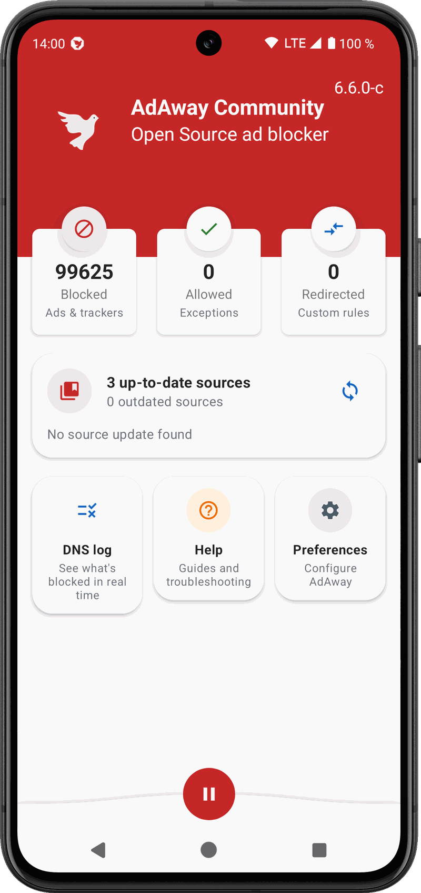
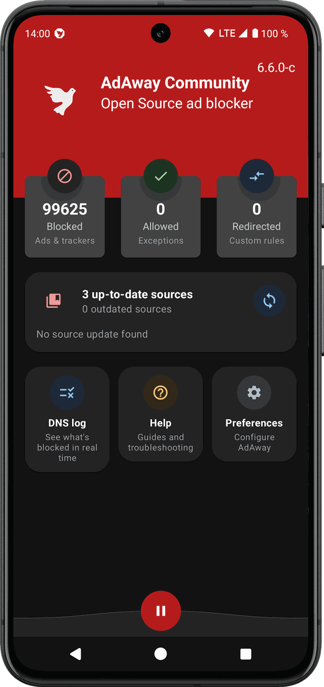
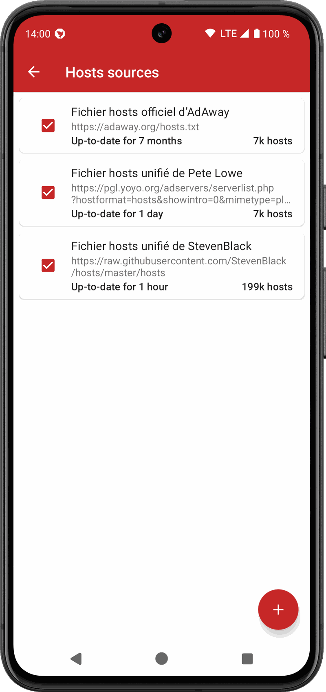
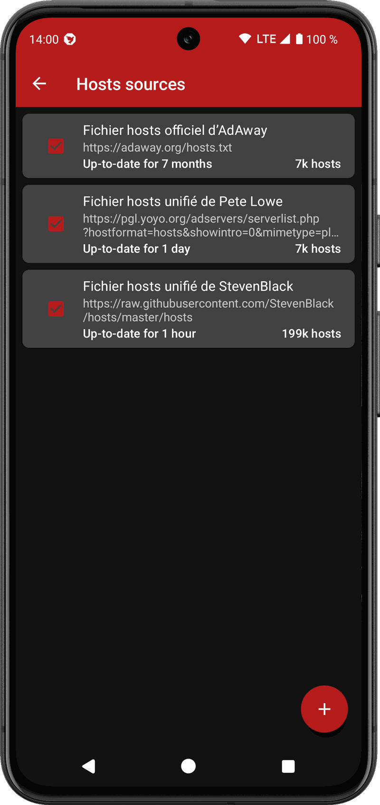
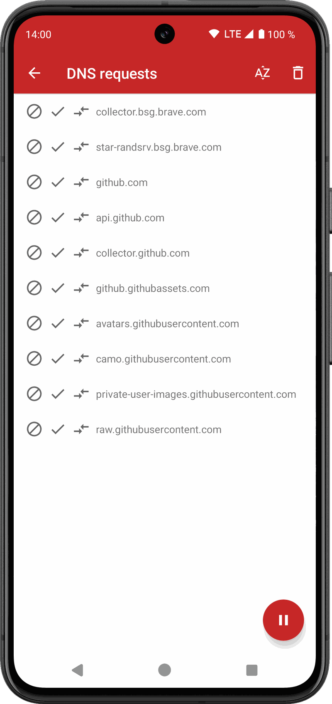
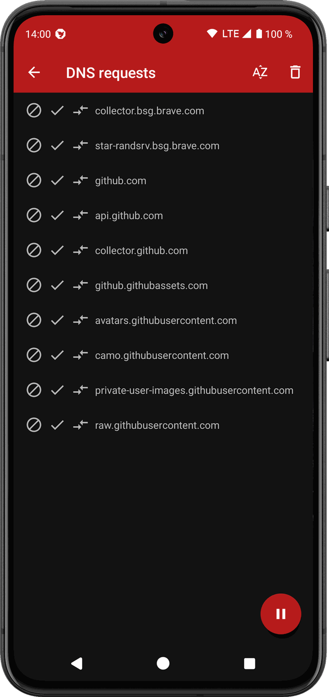
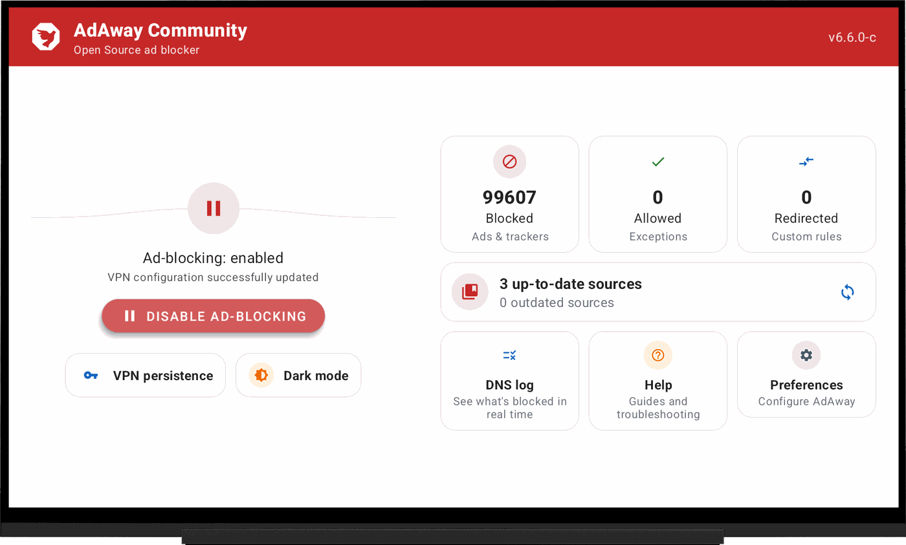
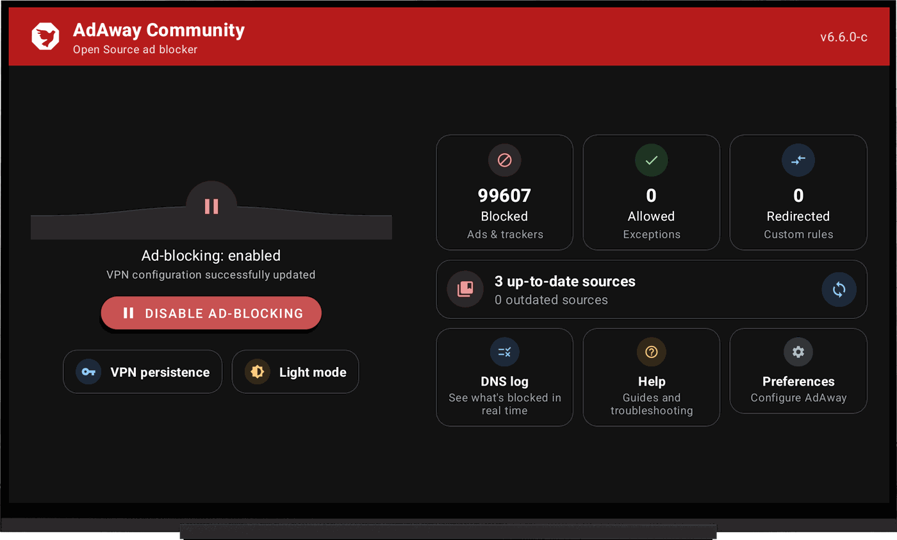

Fixes that were already written
Bug reports and pull requests, including VPN-mode stability work, had been open upstream for a long time. Rather than let tested improvements go to waste, they ship here.
AdAway blocks ads and trackers across every app on your Android device, at the DNS level. No root required, no account, no traffic sent anywhere. This community fork keeps it stable on recent Android versions and adds Android TV support.
Android 8 Oreo or later · GPLv3 · No trackers, no ads, no telemetry by default
AdAway is a great project with a long history. Upstream release and review activity has been limited for a while, and some fixes affecting daily use have been sitting unused. This fork keeps them in a build you can actually install.
Bug reports and pull requests, including VPN-mode stability work, had been open upstream for a long time. Rather than let tested improvements go to waste, they ship here.
Recent Android versions and aggressive manufacturer battery managers break VPN-based blocking in subtle ways. Most of the work here is about surviving that: no restart loops, no silent stops, no lying status.
A remote-friendly TV interface lives in the same codebase as the phone app, so one build covers your phone, your tablet and your TV box.
This is not a hostile fork and not a claim of ownership. It is not affiliated with, endorsed by, or signed by the official AdAway maintainers. If the official project becomes actively maintained again and equivalent fixes land there, this fork may be archived or re-aligned with upstream.
Ads and trackers have to resolve a domain name before they can load anything. AdAway keeps a list of those domains and answers them with nothing, so the request never leaves your device. It works in every app, not just your browser.
AdAway registers a local VPN on the device purely to inspect DNS requests. Nothing is sent to a remote server, there is no account and no tunnel to anyone else. Your traffic never leaves your phone through AdAway.
On a rooted device, AdAway writes the blocklist straight into the system hosts file. Nothing runs in the background at all, and the VPN slot stays free for an actual VPN.
The setup wizard walks you through VPN or root on first launch, and helps you keep the app alive against your phone's battery manager.
Blocklists are plain hosts files maintained by the community. Ship with sensible defaults, add your own, and they refresh automatically.
That is it. Allow anything that breaks, redirect what you want, and watch live what is being blocked in the DNS log.
No restarting itself after you pause it, no reconnect loops, no tunnel rebuilt every time a network flickers. The app's status, the notification and the Quick Settings tile finally agree with each other, and the VPN comes back on its own if your phone kills it.
A real remote-friendly interface: D-pad navigation, a leanback launcher entry, and a TV-adapted DNS monitor.
See exactly what each app resolves, then block, allow or redirect a domain straight from the list.
Blocked, allowed and redirected hosts, each searchable, plus per-app exclusions from the VPN.
The app checks its own GitHub releases and installs the new version for you. No store account involved.
An opt-in diagnostic log records VPN lifecycle and network events, never browsing history, so a problem that happens once a week can still be reported with something useful attached. Copy or share it in one tap.
These follow the theme of this page. Switch it in the top bar and they switch with it.








Grab the latest release and install it. Android will ask you once to allow installs from your browser or file manager.
Download 02Add this repository to Omnify and it will follow new releases and offer updates alongside the rest of your apps.
Get OmnifyOnce installed, AdAway Community checks for new versions on its own and walks you through the update, no browser needed.
Built inEvery Community release is signed with the same key, so updates keep your existing settings and data. That key differs from the official AdAway one, so if you are coming from the official app you have to uninstall it first.